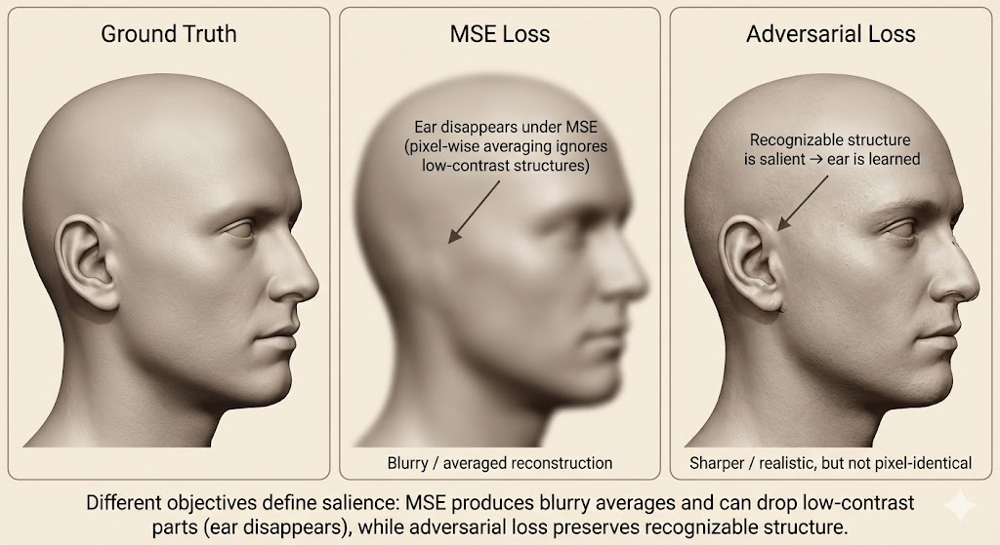

Goodfellow Deep Learning — Chapter 15: Representation Learning
Source: Deep Learning Book (Ian Goodfellow, Yoshua Bengio, Aaron Courville) - Chapter 15
Why representation learning?
- Many information processing tasks can be simplified by better information representation.
- It provides one way to perform unsupervised learning and semi-supervised learning (we often have very large amounts of unlabeled data).
Most representation learning problems face a trade-off between preserving information as much as possible and attaining nice properties (such as independencies).
Greedy Layer-wise Unsupervised Learning
When and Why Does Unsupervised Pretraining Work?
Greedy layer-wise unsupervised pretraining was observed to significantly improve test error on many classification tasks, which played a key role in the renewed interest in deep neural networks around 2006. However, its effectiveness is not universal: on some tasks it provides little benefit or may even be harmful. This variability motivates the need to understand when and why unsupervised pretraining works.
Two main explanations are proposed.
First, unsupervised pretraining can act as a regularizer through initialization. The choice of initial parameters may strongly influence generalization and, to a lesser extent, optimization. Pretraining can initialize the model in regions of parameter space that are otherwise difficult to reach, such as regions with better-conditioned Hessians or more stable gradients. Empirically, networks trained with pretraining tend to converge to similar regions in function space, suggesting reduced variance and a lower risk of severe overfitting.
Second, unsupervised pretraining can improve performance by learning useful representations of the input distribution. Features that are helpful for modeling the input data may also simplify the supervised learning task. This effect is especially pronounced when the initial representation is poor, such as one-hot encodings for words, where unsupervised learning can discover semantic similarities. In contrast, unsupervised pretraining is often less beneficial when the input space already has a meaningful geometry, as in images.
Unsupervised pretraining is most helpful when labeled data is scarce and unlabeled data is abundant, making it closely related to semi-supervised learning. Empirical results show strong gains in settings with very few labeled examples per class. It is also more effective when the target function is highly complex and shaped by regularities in the input distribution, rather than when simpler regularizers such as weight decay suffice.
Despite these benefits, unsupervised pretraining has limitations. It requires a separate training phase and does not offer a straightforward way to control the strength of its regularization effect. Moreover, modern techniques such as improved activations, normalization, and architectural innovations have reduced the necessity of greedy unsupervised pretraining. Nevertheless, the underlying idea—that learning representations from unlabeled data can guide supervised learning toward better solutions—remains central to modern representation learning.
Transfer Learning and Domain Adaptation
Transfer learning and domain adaptation reuse representations learned from one distribution or task to improve generalization on another, assuming shared underlying factors of variation. By learning common features in shared lower layers and task-specific features in upper layers, models can generalize to new tasks or domains with limited data.

The figure illustrates how representations learned from a large source task (cats vs dogs) are transferred to a data-scarce target task (ants vs wasps) by reusing shared low-level visual features while adapting task-specific upper layers.
In transfer learning and multitask learning, shared representations do not always correspond to shared input semantics. In some cases, tasks differ in how information is observed, but share the same output semantics, making it more natural to share higher-level representations instead of lower-level ones.
Domain adaptation refers to the setting where the task remains the same, but the input distribution changes. The goal is to generalize a learned input-output mapping to a new domain by learning representations that preserve task-relevant factors while discarding domain-specific variations.
One-shot learning is an extreme form of transfer learning in which only a single labeled example is available for each new class. This becomes possible when a representation learned in a previous setting has already separated the underlying factors of variation, allowing new examples to cluster around a single representative point in the representation space.
Zero-shot learning goes one step further by requiring generalization without any labeled examples in the target task. It relies on shared semantic structure across domains or modalities, such as images and words, where representations learned from paired data allow inference even for unseen input–output pairs.
From a representation learning perspective, these scenarios differ only in difficulty, not in principle. All three succeed when the learned representation captures the underlying factors that are shared across settings, enabling generalization despite distribution shifts, limited labeled data, or the complete absence of labels.
Semi-Supervised Disentangling of Causal Factors
The key intuition is that if the target variable y is closely tied to one of the latent generative factors of the input x, then modeling the marginal distribution \(p(x)\) already reveals structure that is highly informative for predicting y. In such cases, learning a good unsupervised representation of x can drastically reduce the amount of labeled data required to learn \(p(y \mid x)\).
This motivates viewing semi-supervised and transfer learning as problems of disentangling latent factors of variation, where unsupervised learning identifies meaningful structure in the input space, and limited supervision serves primarily to associate this structure with task-specific labels.

Assumes that data is generated by latent factors h, according to a generative process
\[p(h, x) = p(x \mid h)p(h).\]
The observed distribution p(x) is obtained by marginalizing over these latent factors. Modeling p(x) with unlabeled data therefore encourages the model to capture the latent structure of the data. If the labels y correspond to one of these latent causes (or are strongly correlated with them), then the structure learned from p(x) is directly useful for learning \(p(y \mid x)\).
Connection to Bayes’ Rule
Using Bayes’ rule,
\[p(y \mid x) = \frac{p(x \mid y)p(y)}{p(x)},\]
the authors argue that knowledge of the structure of p(x) is closely tied to the difficulty of learning \(p(y \mid x)\). When the latent factors are disentangled in the learned representation, the conditional distribution becomes simple, stable, and data-efficient to estimate. This explains why semi-supervised learning can enable few-shot or even one-shot learning in favorable cases.
When Semi-Supervised Learning Works
Semi-supervised learning is most effective when:
- The latent factors that explain most of the variation in x are statistically salient.
- The label y corresponds to one of these salient factors.
- Unlabeled data is abundant relative to labeled data.
A simple mixture model illustrates this intuition: if mixture components are well separated, unsupervised learning can identify them without labels, and only a few labeled examples are needed to associate each component with a class.
Practical Limitations
The authors emphasize that real-world data is generated by many latent factors, most of which may be irrelevant to the task. Learning representations that disentangle all factors is generally infeasible and unnecessary. Instead, what matters is which factors are made salient by the learning objective.
The notion of salience depends on the loss function:
- Reconstruction-based objectives (e.g., MSE) emphasize factors that cause large pixel-level changes.
- Adversarial objectives emphasize recognizable structure, even if it affects few pixels.
This explains why some unsupervised objectives help semi-supervised learning, while others fail.

Distributed Representation
A distributed representation encodes concepts using many features whose values can be controlled independently. With n binary features, such a representation can express up to \(2^n\) distinct configurations, allowing the input space to be partitioned into an exponentially large number of regions. Each feature corresponds to a different underlying factor, and combinations of features represent complex concepts.
This is contrasted with non-distributed representations, such as one-hot encodings, clustering, k-nearest neighbors, decision trees, mixture models, or kernel methods. These methods typically assign each input to a single region (or a small set of regions) with separate parameters per region. As a result, the number of distinguishable regions grows only linearly with the number of parameters or examples, and generalization is largely local.
The geometric intuition is illustrated by linear threshold features: each feature defines a half-space in input space, and the intersection of many such half-spaces creates a combinatorial explosion of regions. In high dimensions, a distributed representation can distinguish \(O(n^d)\) regions with only \(O(n)\) features, whereas a non-distributed model would require one parameter (or symbol) per region.
Crucially, distributed representations enable generalization via shared attributes. Concepts that share attributes (e.g., “has fur”, “four legs”) can generalize to each other naturally, unlike symbolic representations where each concept is isolated. This induces a meaningful similarity structure in representation space, which is essential for tasks like language modeling and vision.
From a statistical perspective, distributed representations allow complex functions to be represented compactly, reducing the number of parameters that must be learned from data. This leads to better generalization with fewer labeled examples. Although such models can represent many regions, their effective capacity remains controlled (e.g., bounded VC dimension), especially when combined with simple classifiers such as linear layers on top of the learned representation.
Empirical evidence supports these claims: hidden units in deep networks often align with human-interpretable factors, and generative models can learn directions in representation space corresponding to meaningful variations (e.g., pose, identity). The key benefit is that the model can reason about each factor independently, without enumerating all possible combinations.
Overall, the section argues that the power of deep learning comes not from memorizing regions of input space, but from learning factorized, distributed representations that recombine shared features to explain complex data efficiently.

Exponential Gains from Depth
The key message of this section is that depth provides an exponential advantage in representational efficiency.
While shallow networks are universal approximators in principle, they may require an exponentially large number of hidden units to represent certain functions that deep networks can express compactly.
This advantage arises from hierarchical composition of nonlinear features. Deep networks reuse intermediate representations across layers, allowing complex functions to be constructed from simpler ones. In contrast, shallow or non-distributed representations must allocate separate parameters to each configuration of the input space.
As a result, depth does not merely increase expressive power, but significantly improves statistical efficiency: fewer parameters are needed, fewer training examples are required, and generalization is improved. This explains why deep models often outperform shallow ones in practical tasks, even when both are theoretically capable of representing the target function.
Importantly, this exponential gain is a structural property, not specific to neural networks. Similar results appear in probabilistic models (e.g., sum-product networks) and circuit complexity, reinforcing the idea that deep, distributed representations align well with the compositional structure of real-world data.
Providing Clues to Discover Underlying Causes
| Clue / Assumption | Core Idea | Why it Helps Representation Learning | Typical Methods / Examples |
|---|---|---|---|
| Smoothness / Locality | Nearby inputs should have similar outputs | Encourages generalization from limited data; avoids fitting arbitrary functions | kNN smoothness, regularization, kernel methods |
| Linearity | Relationships between variables are often approximately linear | Makes extrapolation easier but can fail in high dimensions | Linear models, linear layers in deep nets |
| Multiple Explanatory Factors | Observations are generated by multiple underlying causes | Motivates learning representations that separate factors of variation | Semi-supervised learning, latent variable models |
| Causal Structure (h → x) | Latent causes generate observations, not vice versa | Improves robustness and transfer when data distribution changes | Causal representation learning, disentanglement |
| Depth / Hierarchy | High-level concepts are composed of lower-level ones | Enables efficient representation of complex functions | Deep neural networks, hierarchical models |
| Shared Factors Across Tasks | Different tasks depend on overlapping subsets of factors | Enables transfer learning and multitask generalization | Multitask learning, shared encoders |
| Manifold Structure | Data lies near a low-dimensional manifold | Reduces effective dimensionality; improves density modeling | Autoencoders, manifold learning |
| Natural Clustering | Data clusters correspond to semantic classes | Supports classification with few labels | Semi-supervised learning, cluster assumption |
| Temporal & Spatial Coherence | Important factors change slowly over time or space | Helps identify stable underlying causes | Slow Feature Analysis, video representation learning |
| Sparsity | Only a few factors are relevant at a time | Improves interpretability and sample efficiency | Sparse coding, L1 regularization |
| Simple Factor Dependencies | Latent factors interact in simple ways | Makes learning and inference tractable | Factorized priors, independent components |